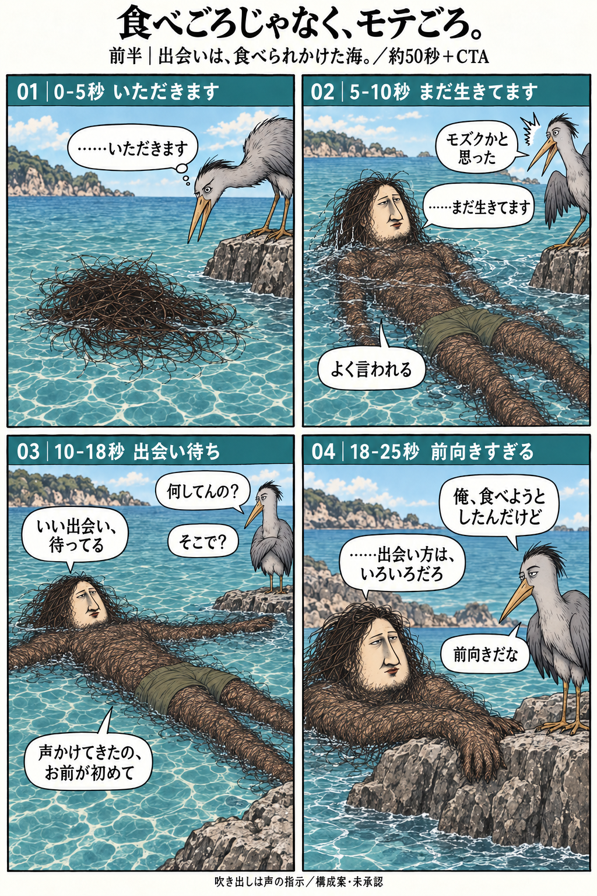
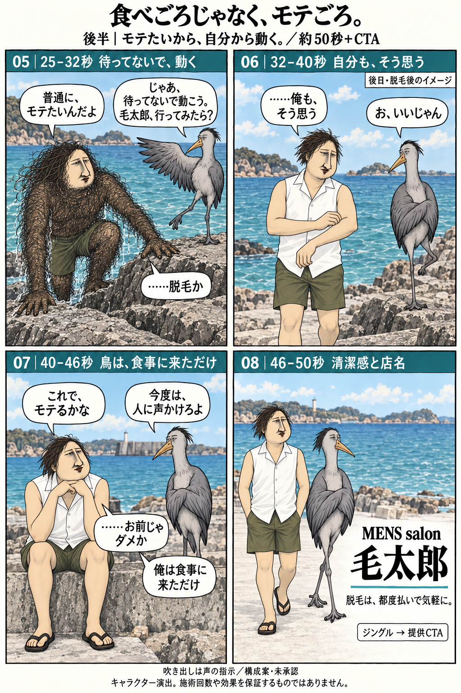

いただきます
鳥「……いただきます」
海面に漂う頭の毛。鳥のくちばしが近づく。顔・体はまだ隠す。波の音だけで始める。
鳥に食べられかけた毛むくじゃらが、
モテるために一歩踏み出す話。
本編 約50秒＋提供CTA ／ 前半4コマ・後半4コマ


鳥「……いただきます」
海面に漂う頭の毛。鳥のくちばしが近づく。顔・体はまだ隠す。波の音だけで始める。
主人公「……まだ生きてます」 鳥「モズクかと思った」 主人公「よく言われる」
顔が出て、鳥が驚く。引いて全身の濃い体毛を見せる。太い海藻状ではなく細い毛の密生。
鳥「何してんの？」 主人公「いい出会い、待ってる」 鳥「そこで？」 主人公「声かけてきたの、お前が初めて」
主人公は仰向けで漂う。鳥は岸から見下ろす。本人の真剣さと状況のズレ。
鳥「俺、食べようとしたんだけど」 主人公「……出会い方は、いろいろだろ」 鳥「前向きだな」
二人の顔に寄る。返答前に一拍。根拠はないが前向きな性格を見せる。
主人公「普通に、モテたいんだよ」 鳥「じゃあ、待ってないで動こう。毛太郎、行ってみたら？」 主人公「……脱毛か」
主人公が上陸。まだ腕・胸・脚は毛むくじゃら。鳥が歩き出し、主人公がついていく。
鳥「お、いいじゃん」 主人公「……俺も、そう思う」
後日へ。顔と体格は同じ。白いノースリーブと短パンで、毛のなくなった腕と脚を見せる。自分の腕を見る表情に少し自信。
主人公「これで、モテるかな」 鳥「今度は、人に声かけろよ」 主人公「……お前じゃダメか」 鳥「俺は食事に来ただけ」
主人公は期待、鳥は冷静。冒頭の食事のつもりだった出会いを回収。短い間を残す。
ナレ「脱毛は、都度払いで気軽に。」 ジングル → 提供CTA動画
同じ二人が歩き出す。清潔な肌、明るい画面、正式ロゴで締める。